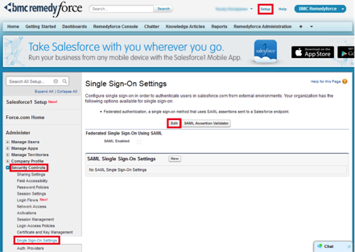
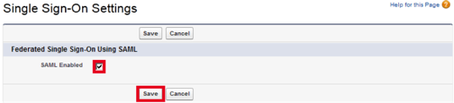
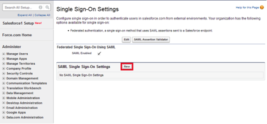
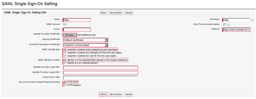
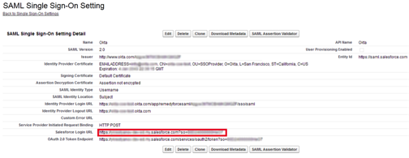
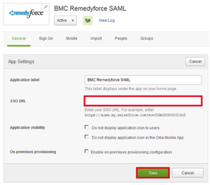
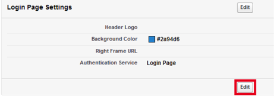
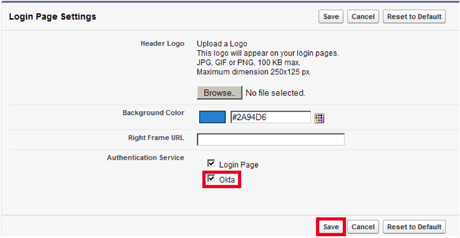
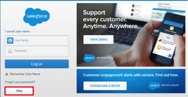

This setup might fail without parameter values that are customized for your organization. Please use the Okta Administrator Dashboard to add an application and view the values that are specific for your organization.
- Install BMC Remedyforce into an existing Salesforce Organization.
- Log in to Salesforce with your administrator username and password-token.
-
Select Setup > Security Controls > Single SIgn-On Settings.
-
Select Edit.

- Select the SAML Enabled checkbox then click Save.

- Select New.

- Enter the following values in the following fields. See the screen shot at the end of this step for reference.
- Issuer: Copy and paste the following value:
Sign into the Okta Admin dashboard to generate this value
- Identity Provider Certificate:
- First download the certificate:
Sign in to the Okta Admin dashboard to generate this value.
- Then select Browse and select the certificate you just downloaded.
- Signing Certificate: Select Default Certificate.
- Assertion Decryption Certificate: Select Assertion not encrypted.
- SAML Identity Location: Select Identity is in the Nameidentifier element of the Subject statement.
- Identity Provider Login URL: Copy the following URL:
Sign into the Okta Admin dashboard to generate this value
- Identity Provider Logout URL: Copy the following URL:
Sign into the Okta Admin dashboard to generate this value
- Service Provider Initiated Request Binding: Select HTTP Post.
- Entity id: Enter the following:
https://saml.salesforce.com
-
Select Save.

- Copy the Salesforce Login URL from the SAML Single Sign-On Setting Detail:

- Login into Okta and on the General tab, paste the Salesforce Login URL value into the SSO URL field:

- In Salesforce, navigate to Setup > Domain Management > Domains, then select your domain:

- On the Login Page Settings section, select Edit.

- Select the Okta checkbox, then select Save.

- Done!
Notes:
Just In Time (JIT) Provisioning is not supported
IdP-initiated flows are supported.
SP-initiated flows are supported, with the following additional setup step:
For SP-initiated flows, open your Salesforce login page and select Okta:
